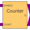

CounterGeneric N Bit Counter |

|
Information
This information is part of the Modelica Standard Library maintained by the Modelica Association.
The Counter is a generic component, which counts the high-low slopes of the count signal, if the enable signal is set to be true. It is composed by n JK flipflops. q is the resulting number, where q[0] is the lowest, and q[n] the highest bit.
Parameters (3)
Connectors (3)
| enable |
Type: DigitalInput |
|
|---|---|---|
| count |
Type: DigitalInput |
|
| q |
Type: DigitalOutput[n] |
Components (1)
| FF |
Type: JKFF[n] |
|---|
Used in Examples (1)
|
Modelica.Electrical.Digital.Examples
Generic N Bit Counter Example |